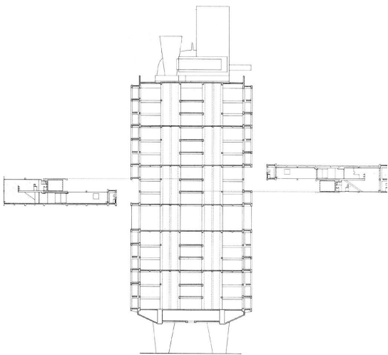
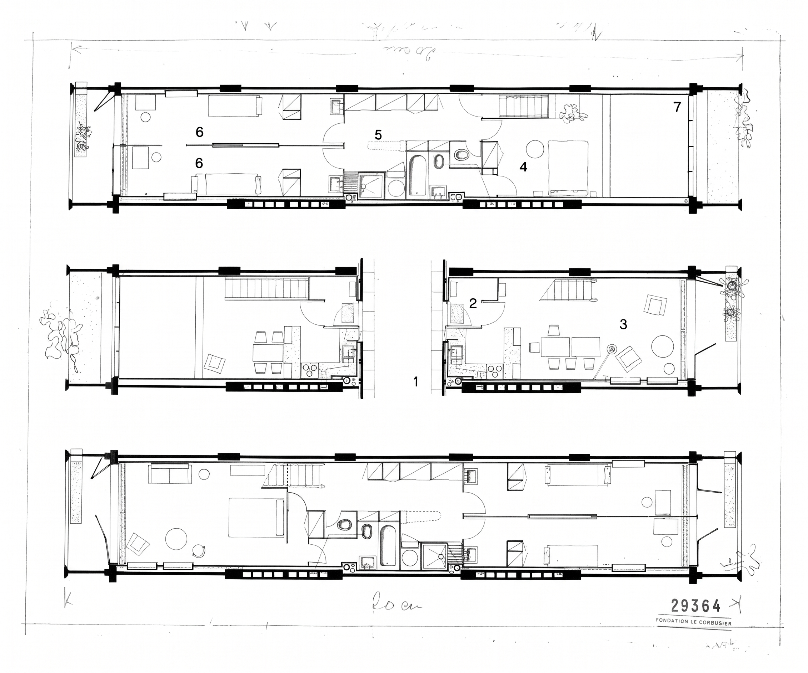

Maximality, Logicality, and Alternatives
Göttingen, November 2026
(perpetually updated)
Slides
Selected readings
- Bar-Lev, Moshe & Danny Fox. (2020) Free choice, simplification, and innocent inclusion.
- Crnič, Luka (2022). Number in NPI licensing.
- Crnič, Luka (2026). Disjunction and NPIs in comparatives.
- Gajewski, Jon (2008). More on quantifiers in comparative clauses.
- Heim, Irene (2006). Remarks on comparative clauses as generalized quantifiers.
- Hoeksema, Jack (1983). Negative polarity and the comparative.
- Kadmon, Nirit & Fred Landman (1993). Any.
- von Stechow, Arnim (1984). Comparing semantic theories of comparison.

